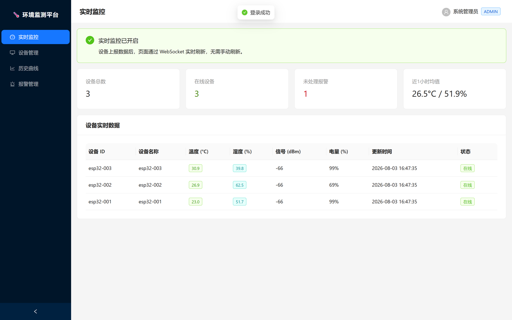
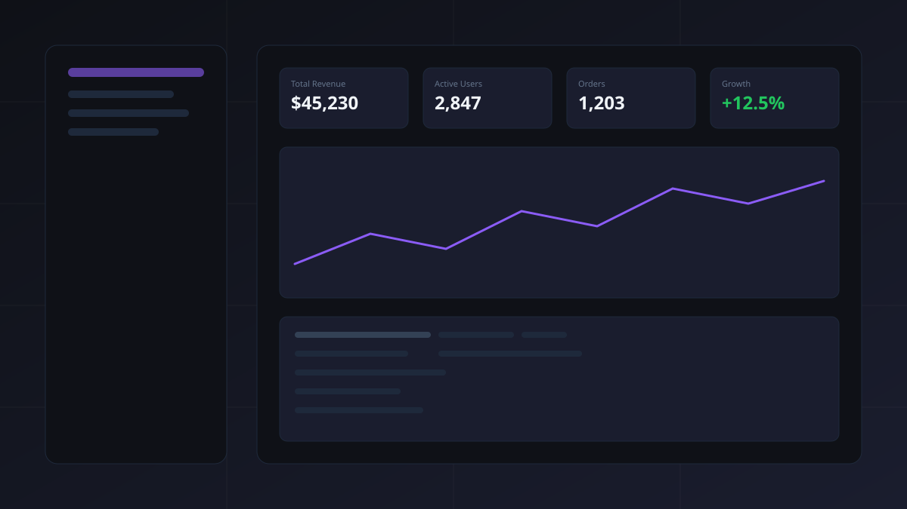
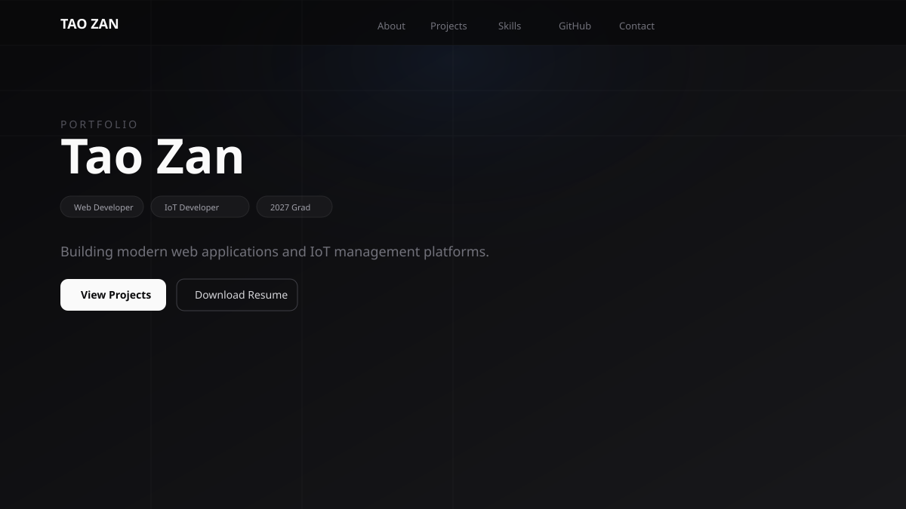
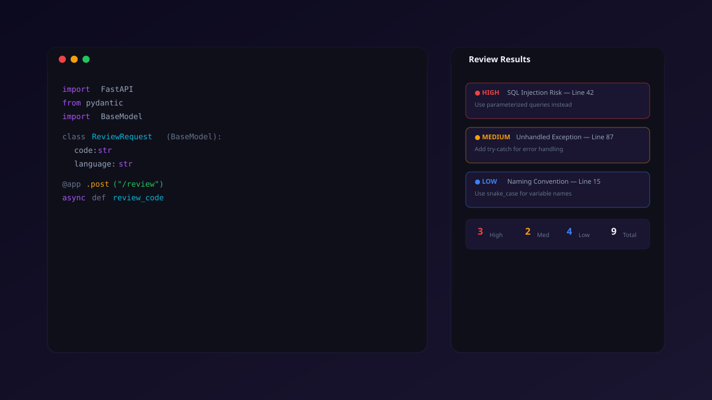
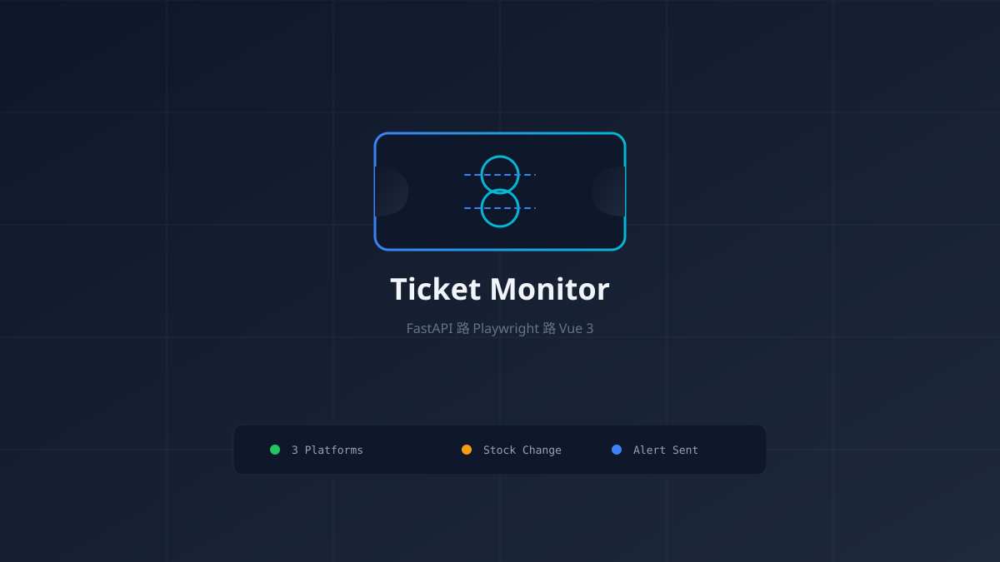
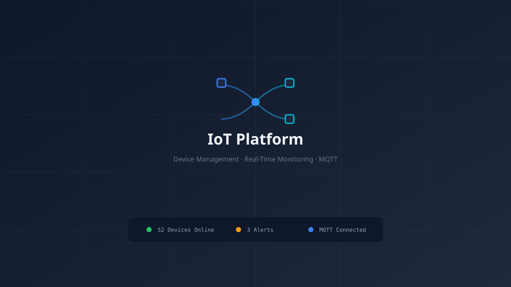
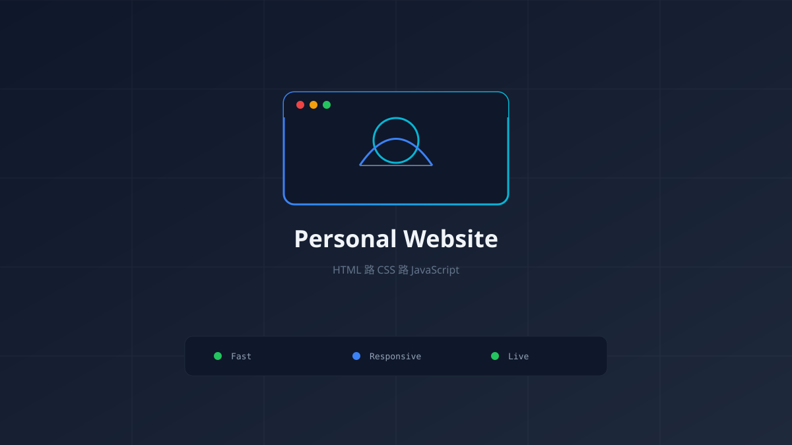

Selected work showcasing my skills and experience.

基于 ESP32 + MQTT + Spring Boot + React + MySQL 的全栈物联网监测平台：实时监控、历史曲线、阈值报警、设备管理与 JWT 登录。A full-stack IoT platform with real-time monitoring, history curves, threshold alarms, device management and JWT login.

A production-ready enterprise administration dashboard with data tables, analytics charts, and user management.

A modern, high-performance portfolio website built with Next.js 16, featuring dark mode, animations, and GitHub API integration.

An intelligent code review tool that analyzes code and provides contextual feedback with severity-based findings.

基于 FastAPI + Playwright + Vue3 的演唱会票务实时监控系统：多平台票务信息采集、库存/价格变化监控与多渠道通知推送。A real-time concert ticket monitoring system with multi-platform data collection, stock/price change tracking and multi-channel notifications.

实时物联网设备监控仪表盘：在线状态、温湿度趋势与报警信息一目了然。A real-time IoT device monitoring dashboard with live device status, temperature & humidity trends and alert management.

个人技术主页：以 IoT 工程师视角展示技能、教育背景与项目经历。A personal tech homepage presenting skills, education and projects from an IoT engineer’s perspective.